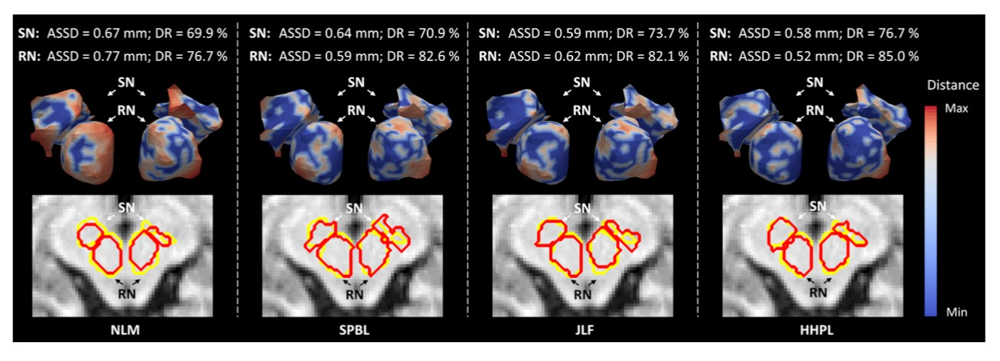

Medical Image Analysis¶
Complex data correlation modelling and representation plays an important role in many applications, such as social media analysis, data classification and medical diagnosis. Here, we focus on graph/hypergraph based learning, hypergraph neural networks, multi-modal data fusion, metric learning and cost-sensitive learning methods, and their applications on visual classification, software defect prediction, and social media data filtering and recommendation.
Diagnosis of Brain Degenerated Disease¶
Brain Degenerated Disease, especially the Alzheimer’s disease (AD) have an enormous impact on our aging society. However, the identification of subtle brain changes that are associated with mild cognitive impairment (MCI), the at-risk stage of AD is still a challenging task. Different from existing works, which employ multimodal data (e.g., MRI, PET or CSF) to identify MCI subjects from normal elderly controls, we use four MRI sequences, including T1-weighted MRI, Diffusion Tensor Imaging, Resting-State functional MRI and Arterial Spin Labeling perfusion imaging. Since these MRI sequences simultaneously capture various aspects of brain structure and function during clinical routine scan, it simplifies finding the relationship between subjects by incorporating the mutual information among them. To this end, we propose a centralized hypergraph learning method to better model relationship among subjects with multiple MRIs for the purpose of MCI diagnosis. We apply our proposed method on a cohort of 41 consecutive MCI subjects and 63 age-and-gender matched controls with four MRI sequences. Our method achieves at least a 7.61% improvement in classification accuracy compared to state-of-the- art methods using multiple MRI data.
High-Order Brain Network¶
Brain functional connectivity (FC) network, estimated with resting-state functional magnetic resonance imaging (RS-fMRI) technique, has emerged as a promising approach for accurate diagnosis of neurodegenerative diseases. However, the conventional FC network is essentially low-order in the sense that only the correlations among brain regions are taken into account. The features derived from this type of brain network may fail to serve as an effective disease biomarker. To overcome this drawback, we propose extraction of novel high-order FC correlations that characterize how the low-order correlations between different pairs of brain regions interact with each other. Experimental results verify the effectiveness of the high-order FC network on disease diagnosis.
Cardiovascular disease diagnosis¶
Cardiovascular disease diagnosis is a very important issue in the medical field. In the diagnosis process, medical image processing and lesion area detection are areas of artificial intelligence applications. At present, the main diseases we study include heart disease (ASD), ventricular dysfunction (VSD), coronary heart disease, cerebral hemorrhage, and cerebral infarction.
Medical Image Segmentation¶
Accurate segmentation of brain anatomical structures is crucial in various neuroimaging applications, such as the investigation of imaging biomarkers for neurodegenerative diseases. Although multi-atlas patch-based segmentation (MAS) has achieved many successes in the medical imaging area, this approach has a limitation in segmenting anatomical structures associated with poor image contrast, such as infant hippocampus and gray matter nuclei in magnetic resonance images. To address this limitation, we proposed a novel MAS framework by using hierarchical hypergraph learning for the segmentation of small anatomical structures from low image-contrast regions of MR image. Experimental results on segmenting both deep gray matter structures in elderly brain images and the hippocampus on ADNI dataset showed statistically significant improvements by our proposed method, compared to all other three state-of-the-art patch-based label fusion methods.